Which of my Home Assistant integrations are about to break?
Of 4,010 HACS integrations crawled today against core 2026.10, 912 use an API that is going away and 2,325 are clean. The next 10 break in Home Assistant 2026.10.
Hong Kong. I build guardrails for dependency and toolchain risk. Everything below is crawled on a schedule, so the answer is already here rather than something you have to go and measure.

Rebuilt 2026-09-09.
Of 4,010 HACS integrations crawled today against core 2026.10, 912 use an API that is going away and 2,325 are clean. The next 10 break in Home Assistant 2026.10.
44 of 54 plugins run clean on ESLint 10.10.0, measured by actually executing them rather than reading a peer range. 6 worked on 9.39.5 and no longer do.
Of 3,126 packages audited from a download-ranked sample today, 26 run an install script and 17 of those score HIGH risk. The biggest is esbuild at 255M installs a week.
18 published packages. 2,759 installs a week between them. Download counts include CI and mirrors, so read them as reach rather than as people.
| Package | Install | Weekly |
|---|---|---|
| wow-secret-lintFind WoW retail addon Secret Value violations in Lua before they ship. CLI plus GitHub Action. | npm i wow-secret-lint | 797 |
| mcp-vetScan MCP server source for patterns that break under the 2026-07-28 Model Context Protocol spec. | npm i @booyaka/mcp-vet | 542 |
| mcp-app-debugLocal debug host for MCP Apps. Renders your server's app in a real browser with full postMessage protocol visibility and 5 automated diagnostics. | npm i mcp-app-debug | 510 |
| npm-script-lensSee what an install script actually does before you approve it: behavioral analysis, binding.gyp inspection and resolved provenance identity for npm 12 allowScripts, pnpm allowBuilds, yarn and bun | npm i npm-script-lens | 348 |
| gemcatchFire-and-forget CLI for Gemini's Interactions API background execution. Submit long-running research prompts, close your laptop, collect results later. | npm i gemcatch | 158 |
| agent-plugins-conformance-kitConformance test suite for Agent Plugins 1.0.0 client loaders: 133 real plugin fixtures, a runner, and an adapter contract. | npm i agent-plugins-conformance-kit | 153 |
| runner-driftDetect, attribute and report GitHub Actions runner-image tool drift. Locks the tool versions your CI actually uses and names the runner-images commit that changed them. | npm i runner-drift | 94 |
| cargo-witnessDetect Rust supply-chain attacks by diffing published crate artifacts against their git source (attested/exact-commit). CLI + daemon + GitHub Action. | npm i cargo-witness | 39 |
| ts7-compat-guardTypeScript 7.0 / tsgo readiness scanner. Compiler-API deps and removed tsconfig options with line numbers, plus advisories. Config-only, so no false positives. CLI, GitHub Action, SARIF. | npm i ts7-compat-guard | 38 |
| actions-atticArchive workflow runs, checks and statuses into your repo before GitHub deletes them from 2026-10-01 | npm i actions-attic | 33 |
| eslint10-matrixCan you upgrade to ESLint 10 yet? A nightly matrix of ESLint plugins actually executed against real ESLint 9 and 10 installs, plus a CLI that answers it for your repo. | npm i eslint10-matrix | 10 |
| grok-loop-kitAutomatic Grok 4.5 context compaction for xAI Responses API agent loops. Node, Python, and a LangChain/LangGraph adapter. | npm i grok-loop-kit | 10 |
| cse-bridgeSelf-hosted drop-in for Google's Custom Search JSON API (shutting down 2027-01-01), backed by your own SearXNG. Change one base URL, keep your code. | npm i cse-bridge | 6 |
| grokscopeReal-time developer community intelligence from X, powered by Grok 4.5's native x_search - cited, clickable, in your terminal. | npm i grokscope | 5 |
| studio-osSelf-hosted studio management for yoga/pilates/gyms - booking, class packs, memberships, waivers. Payments on YOUR OWN Stripe account: no processing markup, no per-booking fees, no contracts. The Mindbody escape hatch. | npm i studio-os | 5 |
| pmpt-ejectRescue your OpenAI reusable prompt objects before v1/prompts shuts down on 2026-11-30, then keep hot-fixing prompts with no redeploy. Zero dependencies. | npm i pmpt-eject | 4 |
| pnpm11-ci-guardDetect and fix pnpm v11 silent-failure patterns in Dockerfiles and GitHub Actions workflows, the half of the migration pnpm's own codemod does not reach. | npm i pnpm11-ci-guard | 4 |
| pal-schema-collectpalsc validates PalSchema Schema Generator output and submits it to palschema-hub as an automated GitHub PR. | npm i pal-schema-collect | 3 |
When I depend on something and hit a real bug, I send the fix back. 47 merged pull requests across 27 projects, including koreader, nvim-lspconfig, gh-dash, ai-toolkit, sqlfluff, lualine.nvim, awesome-nodejs-security, minijinja. 34 more open. Every PR I've opened.
The Daily Fable is one brand-new generative piece every day, made end to end by an AI. Latest: Day 44 — Can You Hear the Shape of a Drum?, 2026-09-09.